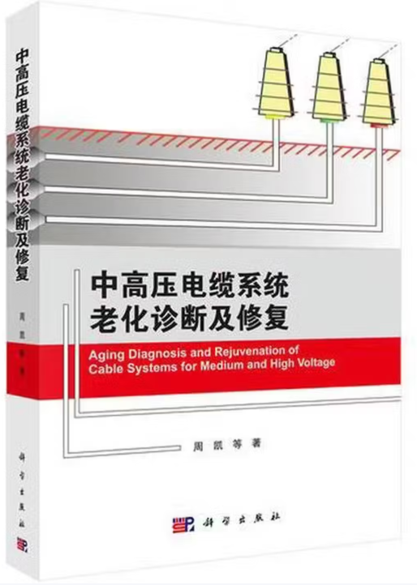

没有找到匹配的教材与专著，请尝试其他关键词。
作者主编：周凯
出版社中国电力出版社
ISBN9787523901335
出版时间2026-01-01
出版信息本书为国家电网公司电力科技著作出版项目，是基于国家自然科学基金项目及多个横向科学技术项目的研究成果及现场应用案例编撰而成。本书系统阐述了配电电缆在运行条件下的老化机理及绝缘状态诊断、缺陷定位与修复技术，相关成果已在多家单位进行了广泛的工程应用，取得了显著成效。 全书共十章，内容涵盖了配电电缆绝缘状态监测技术领域的近期新研究理论与工程实践知识，主要内容包括配电电缆概述、电缆及其附件的基本原理与结构、电缆本体及附件的常见缺陷、电缆状态诊断方法及现场应用案例、缺陷定位技术及其现场应用案例、修复技术及其现场应用案例等。书中不仅详细阐述了绝缘状态监测的理论知识，还结合了大量的现场测试案例，理论与实践相结合，深入浅出地呈现了配电电缆绝缘状态监测技术的近期新研究成果与实际应用经验。
点击窗口外或按 Esc 关闭

作者作者: 周凯；李康乐；龚薇
出版社科学出版社
ISBN9787030572202
出版时间2018-10-01
出版信息电气工程专业中电力系统、高电压技术方面的学生电力系统中高压电缆线路设计、运行和维护人员电缆及附件制造、设计和测试工程师随着中国城市化的发展，交联聚乙烯（XLPE）电缆在城市电网中得到广泛应用。然而在长期运行过程中，在电缆线路中不可避免会引发诸如水树、电树、热老化或者局部放电等绝缘劣化现象，导致电缆运行可靠性下降，进而对电缆系统的安全稳定运行产生不利影响。本书主要介绍了电缆及附件的绝缘老化理论和老化规律，绝缘老化的诊断方法，以及电缆的修复技术及工程应用。总体来说，认识电缆绝缘中的老化现象及发展规律，有效诊断电缆的绝缘状态并采取相应的修复技术以恢复绝缘水平，对于提高配电网的安全稳定运行具有重要的理论和工程价值
 HV Lab
HV Lab